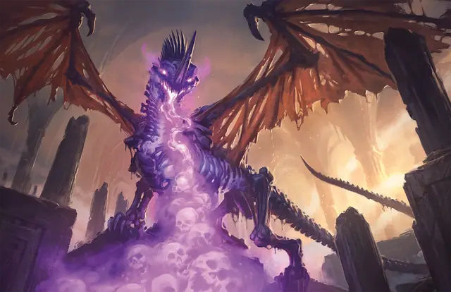

Драколич (шаблон)
Dracolich
Огромная Нежить, законно-злая

Класс Доспеха 19 (природный доспех)
Хиты 225 (18к12 + 108)
Скорость 40 футов, летая 80 футов, копая 30 футов
| мод | спас | ||
|---|---|---|---|
| СИЛ | 25 | +7 | +7 |
| ЛОВ | 10 | +0 | +5 |
| ТЕЛ | 23 | +6 | +11 |
| мод | спас | ||
|---|---|---|---|
| ИНТ | 19 | +4 | +4 |
| МДР | 15 | +2 | +7 |
| ХАР | 19 | +4 | +9 |
Навыки Восприятие +12, Скрытность +5
Сопротивление урону некротическая энергия
Иммунитет к урону электричество, яд
Иммунитет к состояниям паралич, очарование, истощение, испуг, отравление
Чувства слепое зрение 60 футов, тёмное зрение 120 футов, пассивное Восприятие 22
Языки Общий, Драконий
Опасность 17 (18000 опыта)
Бонус мастерства +6
Особенности
Легендарное сопротивление (3/день). Если драколич проваливает спасбросок, он может вместо этого сделать спасбросок успешным.
Сопротивление магии. Драколич совершает с преимуществом спасброски от заклинаний и прочих магических эффектов.
Шаблон драколича. Только древний или взрослый истинный дракон может быть преобразован в драколича. Молодые драконы, которые пытаются пройти трансформацию, умирают, равно как и другие существа, не являющиеся истинными драконами, такие как псевдодраконы и виверны. Теневой дракон не может быть преобразован в драколича, поскольку он уже потерял слишком большую часть своего физического тела.
Когда дракон становится драколичем, он сохраняет свою статистику, за исключением пунктов, описанных ниже. Дракон теряет все особенности, такие как Амфибия, которые подразумевают живую физиологию. Драколич может сохранить или потерять некоторые или все свои действия логова, или унаследовать новые, в зависимости от решения Мастера.
Вид. Вид драколича меняется с «дракон» на «нежить», и ему больше не требуется воздух, еда, питьё и сон.
Сопротивление урону. Драколич получает сопротивление урону некротической энергией.
Иммунитет к урону. Драколич получает иммунитет к яду. Он также сохраняет все иммунитеты, которыми обладал до того, как стал нежитью.
Иммунитет к состоянию. Драколич не может быть очарован, испуган, парализован или отравлен. Он также не страдает от истощения.
Сопротивление магии. Драколич совершает с преимуществом спасброски от заклинаний и прочих магических эффектов.
Действия
Мультиатака. Драколич может использовать Ужасающее присутствие. Затем он совершает три атаки: одну укусом, и две когтями.
Укус. Рукопашная атака оружием: +12 к попаданию, досягаемость 10 футов, одна цель. Попадание: Колющий урон 18 (2к10 + 7) плюс урон электричеством 5 (1к10).
Коготь. Рукопашная атака оружием: +12 к попаданию, досягаемость 5 футов, одна цель. Попадание: Рубящий урон 14 (2к6 + 7).
Хвост. Рукопашная атака оружием: +12 к попаданию, досягаемость 15 футов, одна цель. Попадание: Дробящий урон 16 (2к8 + 7).
Ужасающее присутствие. Все существа на выбор драколича, находящиеся в пределах 120 футов от него и знающие о его присутствии, должны преуспеть в спасброске Мудрости Сл 18, иначе станут испуганными на 1 минуту. Существо может повторять этот спасбросок в конце каждого своего хода, оканчивая эффект на себе при успехе. Если спасбросок существа был успешным, или эффект на нём окончился, оно получает иммунитет к Ужасающему присутствию этого драколича на следующие 24 часа.
Электрическое дыхание (перезарядка 5–6). Драколич выдыхает молнию 90-футовой линией шириной 5 футов. Все существа в этой линии должны совершить спасбросок Ловкости Сл 20, получая урон электричеством 66 (12к10) при провале, или половину этого урона при успехе.
Легендарные действия
Драколич может совершить 3 легендарных действия, выбирая из представленных ниже вариантов. За один раз можно использовать только одно легендарное действие, и только в конце хода другого существа. Драколич восстанавливает использованные легендарные действия в начале своего хода.
Обнаружение. Драколич совершает проверку Мудрости (Восприятие).
Атака хвостом. Драколич совершает атаку хвостом.
Атака крыльями (стоит 2 действия). Драколич бьёт своими рваными крыльями. Все существа в пределах 10 футов от драколича должны преуспеть в спасброске Ловкости Сл 21, иначе получат дробящий урон 14 (2к6 + 7) и будут сбиты с ног. После этого удара крыльями драколич может пролететь на расстояние, не превышающее половину скорости полёта.
Описание
Даже таким долгожителям как драконы когда-то приходится умирать. Осознание этого многим драконам не даёт покоя, и некоторые из них позволяют с помощью некромантии и древних ритуалов превращать себя в могущественную нежить — драколичей. Только самые самовлюблённые драконы выбирают этот путь, зная, что в результате они оборвут все связи со своими сородичами и богами драконов.
По ту сторону смерти. При трансформации драколич сохраняет свою форму и размеры, его кожа и чешуя плотно прилегают к костям или же наоборот, сбрасываются, оставляя голый скелет. Его глаза выглядят как пылающие точки света, плавающие в тёмных впадинах, и намекающие на недоброжелательность неживого разума.
Многие драконы преследуют тщеславные цели уничтожения и доминирования, но драколичи сильнее самых злых драконов движимы жаждой власти над всеми. Драколичи являются дьявольски умными тиранами, плетущими паутину из бесчестных схем и планов, завлекая прислужников, движимых алчностью и жаждой власти. Действуя из тени и тщательно стараясь сохранить своё существование в секрете, драколич представляет собой хитрого и опасного противника.
Филактерий драколича. Создание драколича требует сотрудничества дракона и группы магов или культистов, способных провести надлежащий ритуал. Во время ритуала дракон поглощает токсичное варево, мгновенно его убивающее. Заклинатели при этом уже готовы опутать его дух, чтобы поместить его в специальный драгоценный камень, функционирующий как филактерий лича. Когда плоть дракона изгнивает, дух заключённый внутри камня, возвращается и оживляет драконьи кости.
Если физическое тело драколича когда-нибудь будет разрушено, его дух вернётся в драгоценный камень, если они находятся на одном плане. Если драгоценный камень прикоснётся к трупу другого дракона, дух драколича может овладеть этим телом, чтобы стать новым драколичем. Если духовный камень драколича будет находиться на другом плане, духу драколича будет некуда идти при разрушении его тела, и он просто уйдёт в посмертие.